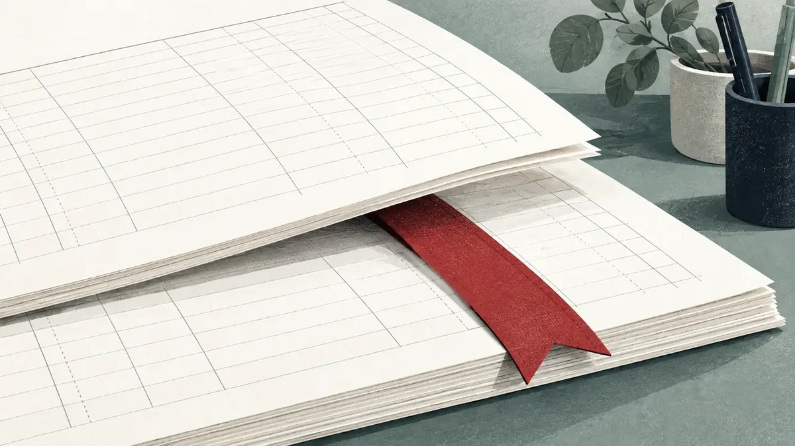

はじめての確定申告・開業・小さな法人の会計
何を聞けばいいか、
から一緒に。
結ノ浦市の、個人事業主と小さな法人のための会計事務所です（架空）。税金の言葉は、言い換えてからお話しします。料金は、作業の範囲ごとに先にお伝えします。
- 初回相談は60分・無料
- 相談だけで、契約しなくて大丈夫
- 返信は2営業日以内が目安
- 初回相談
- 60分・0円
- 確定申告の作成
- 55,000円〜
- 予約
- Web・電話（平日 9:30–17:30）
料金は税込・見本用の架空価格。時間・返信の目安は見本上の設定です。無理な勧誘はしません。

013つの質問
状況から、聞くことを選ぶ。
答えると、初回相談で聞くとよいことと、用意するものが出ます。答えは送信されず、この画面の中だけで使います。
初回相談のための栞
3つの質問に答えると、ここが絞り込まれます。
いまは、すべての状況の項目を表示しています（かっこ内は対象の状況）。
相談で聞くとよいこと
- いちばん不安なこと。言葉にならなくても大丈夫です
- 開業届と青色申告の申請は、いつまでに何を出すか（開業前後）
- 経費にできるもの・できないものの線引き（開業前後・個人）
- 帳簿をつけ始める方法と、最初にそろえる記録（帳簿がまだ）
- いまの帳簿で足りないところはどこか（帳簿あり）
- 次の申告の期限と、間に合わせるための段取り（期限）
- インボイスの登録が必要かどうか、登録した場合の手間（インボイス）
- 法人にした場合と、個人のままの場合で何が変わるか（法人化）
- 記帳をどこまで任せられるか、範囲と料金（記帳の手間）
- 決算の時期と、顧問契約に含まれる範囲（法人）
- 給与を払うときの、源泉徴収の手続き（法人）
用意するもの
- 本人確認の書類
- 事業用の通帳・クレジットカードの明細（直近3か月ほど）
- 開業届の控え（出していれば）（開業前後・個人）
- 前年の確定申告書の控え（個人）
- 売上と経費が分かるもの。請求書や領収書の束のままで大丈夫です（帳簿がまだ）
- いまの帳簿（会計ソフトのデータの書き出し、または紙の帳簿）（帳簿あり）
- 直近の決算書と申告書（法人）
- 定款と、登記事項証明書の写し（法人）
- 取引先に出している請求書の見本（インボイス）
02依頼の範囲と料金
ここまで含みます。料金は先に。
料金はすべて税込です。「〜」は取引の量や帳簿の状態で変わり、変わる条件も先に書いています。
| 作業 | ここまで含みます | 含みません | 料金（税込） |
|---|---|---|---|
| 確定申告の作成 | 申告書の作成と提出、内容の説明 | 帳簿の作成（記帳代行で承ります） | 55,000円〜 |
| 記帳代行 | 月の取引50件までの入力、月ごとの試算表 | 50件を超える分、給与計算 | 月 11,000円〜 |
| 法人の顧問 | 月1回の面談、日々の質問への回答 | 決算と申告（別料金） | 月 27,500円〜 |
| 初回相談 | 60分の面談、依頼する場合の見積もり | 書類の作成 | 0円 |
料金・時間はすべて見本用の架空の設定です。サービスと料金を詳しく見る
03はじめての方へ
この順番で進みます。
見積もりに納得していただくまで、作業も費用も始まりません。
- 1
予約
予約の画面か電話で、希望の日時と、相談の方法（事務所・オンライン）を選びます。
用意するもの特になし。状況を一言でお伝えください
- 2
準備
上の質問の結果を見ながら、書類をそろえます。そろわなくても大丈夫です。
用意するもの本人確認の書類、通帳の明細など
- 3
面談（60分・無料）
状況をうかがい、税金の言葉を言い換えながら、必要な作業を一緒に整理します。
用意するもの聞きたいことのメモ
- 4
見積もり
作業の範囲と料金、期限を書面でお送りします。依頼するかは、持ち帰って決めてください。
用意するものなし。ここで終えても大丈夫です
04事務所の考え方
税金の言葉は、
言い換えてから話します。
聞き慣れない言葉が出たら、その場で言い換えます。たとえば、こんなふうに。
- 青色申告あおいろしんこく
- 帳簿をきちんとつける代わりに、税金の計算で優遇を受けられる申告のしかたです。事前に申請が必要です。
- インボイス適格請求書
- 決まった項目と登録番号を書いた請求書のことです。取引先が消費税の計算で使います。
ほかの言い換え（記帳・決算）
- 記帳きちょう
- お金の出入りを、日付と内容ごとに帳簿へ書き写すことです。
- 決算けっさん
- 1年分のお金の出入りを締めて、もうけと財産をまとめる作業です。
急がせません。料金は先にお伝えします。相談だけで終わっても、かまいません。
05初回相談
はじめての確定申告に、
栞を一枚。
60分・無料で、何から始めればいいかを一緒に整理します。事務所でも、オンラインでも。
- 相談だけで、契約しなくて大丈夫
- 無理な勧誘はしません
- 返信は2営業日以内が目安